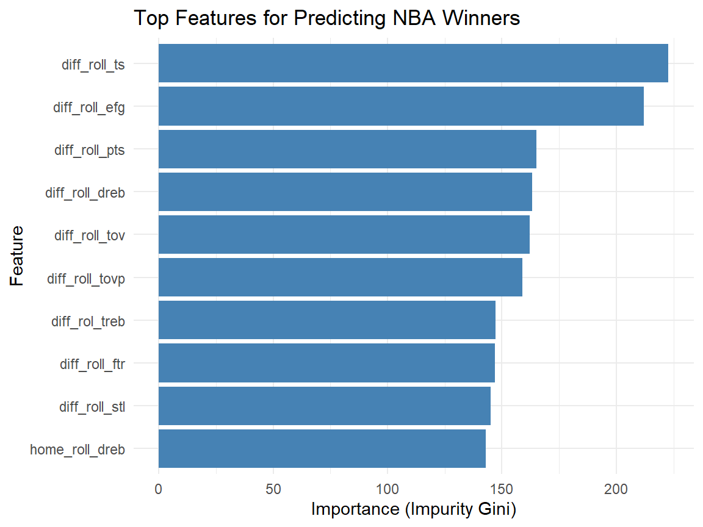
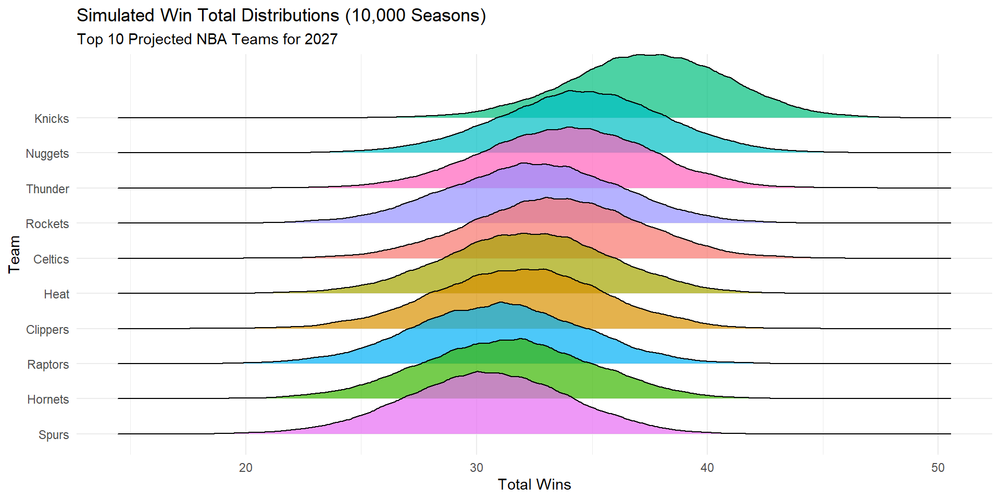

DATA 607 - Data Science in Context Presentation
2026-09-21
Inspiration:
‘Exploring Machine Learning: Predicting the NBA’ by author Kishore Annambhotla.
https://medium.com/@k4annam/exploring-machine-learning-predicting-the-nba-607aea31c955
Objective:
Build a Machine Learning pipeline using real-time data to predict NBA game outcomes.
R Packages utilized:
hoopR, tidyverse, slider, and tidymodels
Data Source:
Game-level box score data from hoopR package (2019-2026 seasons)
Rolling Metrics:
18-game rolling averages are computed for:
— Offensive output and shooting metrics (Effective FG%, True Shooting %)
— Advanced box stats (Rebounds, Assists, Turnovers, Steals, Blocks)
Contextual factors:
Days of rest and home court advantage (HCA)
#Empirically derived rolling-calc-window
n_rolling_days <- 18
full_features_df <- box_scores |>
arrange(team_id, game_date) |>
group_by(team_id) |>
mutate(
#define home-game advantage
hga = if_else(str_detect(team_home_away, "away"),0,1),
#define last game outcome
lgo = lag(as.integer(team_winner), n = 1, default = NA),
#define effective field goal percentage
efg = (field_goals_made + 0.5*three_point_field_goals_made)/(field_goals_attempted),
#define turnover rate percentage
tov = (total_turnovers)/(field_goals_attempted + 0.44 * free_throws_attempted + total_turnovers),
#define free throw rate
ftr = free_throws_attempted/field_goals_attempted,
#define true shooting percentage
ts = team_score / (2* (field_goals_attempted + (0.44 * free_throws_attempted))),
# Rolling n-game average of offensive rating and shooting %
roll_pts_scored = slide_dbl(team_score, mean, .before = n_rolling_days, .after = -1),
roll_field_goal_pct = slide_dbl(field_goal_pct, mean, .before = n_rolling_days, .after = -1),
roll_oreb = slide_dbl(offensive_rebounds, mean, .before = n_rolling_days, .after = -1),
roll_dreb = slide_dbl(defensive_rebounds, mean, .before = n_rolling_days, .after = -1),
roll_reb = slide_dbl(total_rebounds, mean, .before = n_rolling_days, .after = -1),
roll_ast = slide_dbl(assists, mean, .before = n_rolling_days, .after = -1),
roll_stl = slide_dbl(steals, mean, .before = n_rolling_days, .after = -1),
roll_blk = slide_dbl(blocks, mean, .before = n_rolling_days, .after = -1),
roll_tov = slide_dbl(turnovers, mean, .before = n_rolling_days, .after = -1),
roll_efg = slide_dbl(efg, mean, .before = n_rolling_days, .after = -1),
roll_tovp = slide_dbl(tov, mean, .before = n_rolling_days, .after = -1),
roll_ftr = slide_dbl(ftr, mean, .before = n_rolling_days, .after = -1),
roll_ts = slide_dbl(ts, mean, .before = n_rolling_days, .after = -1),
days_rest = as.numeric(game_date - lag(game_date))
) |>
ungroup()Train/Test split:
— Training: Historical seasons (2019-2025)
— Testing: 2026 season
Tidymodels Recipe:
Data normalization, feature disentanglement, and removal of collinear variables (i.e. non-independent)
Algorithm:
Random forest classification model (ranger) with 500 trees, evaluating Gini impurity
2026 Season Metrics:
(compared to 50% random baseline)
Key Drivers:
* Differential TS%
* Differential eFG%

| Rank | Team | Projected | 95% CI Lower | 95% CI Upper | SE |
|---|---|---|---|---|---|
| 1 | Knicks | 55.8 | 47.5 | 64.1 | 4.22 |
| 2 | Nuggets | 50.5 | 41.9 | 59.1 | 4.40 |
| 3 | Thunder | 50.5 | 41.9 | 59.1 | 4.41 |
| 4 | Celtics | 48.9 | 40.2 | 57.6 | 4.44 |
| 5 | Heat | 48.8 | 40.1 | 57.5 | 4.44 |
| 6 | Clippers | 47.5 | 38.7 | 56.3 | 4.47 |
| 7 | Spurs | 47.1 | 38.3 | 55.9 | 4.48 |
| 8 | Rockets | 46.7 | 37.9 | 55.5 | 4.48 |
| 9 | Raptors | 46.2 | 37.4 | 55.0 | 4.49 |
| 10 | Hornets | 45.1 | 36.3 | 53.9 | 4.51 |

Summary:
An end-to-end Machine Learning pipeline was built using Random Forest classification
Achieved an accuracy of 63% on 2026 NBA Season game-level predictions
Takeaways:
Rolling features capture team momentum better than static seasonal stats.
Random Forest methodology provides a stable probability estimate for game outcomes.
Next steps:
— https://medium.com/@k4annam/exploring-machine-learning-predicting-the-nba-607aea31c955
— tidymodels, hoopR, slider, and tidyverse
— hoopR package: https://hoopr.sportsdataverse.org
tidymodels syntax debugging were assisted by Google Gemini (Flash model 3.6, 2026).— All logic, data pipeline design, and outputs were verified by the author.